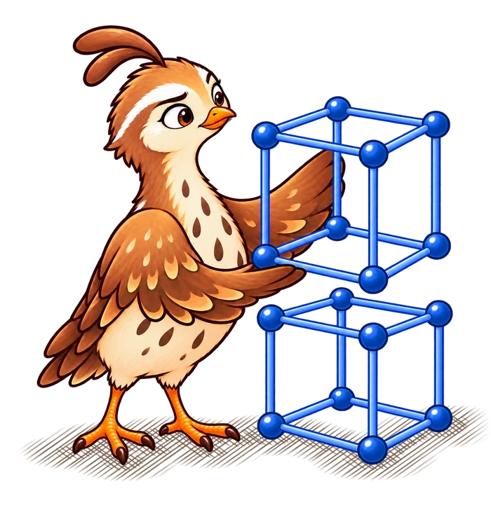

The bond through orbitals: localization, NBO, NCI
Bonds, lone pairs, hybridization, donor–acceptor interactions are the chemist's language. The wavefunction does not contain them: they are ways of reading it. Here — why orbitals can be rotated at no cost, where fractional hybridization comes from, what the energy E(2) of an NBO analysis means and how the NCI plot finds weak contacts.
What to understand
- A rotation of occupied orbitals does not change the determinant: the same energy and density, only the look of the orbitals changes. Canonical orbitals diagonalize F and have energies; localized ones (Boys — the smallest spread, Pipek–Mezey — the fewest atoms) look like the Lewis structure but have no orbital energies.
- NBO builds from the density matrix natural atomic orbitals, hybrids and bond orbitals with occupations as close to two as possible. The remainder on the formally empty orbitals measures how far the molecule is from one Lewis structure.
- Hybrids s + λp at an angle θ are orthogonal if λ² = −1/cosθ: 109.5° — sp³, 120° — sp², 180° — sp. In water (104.5°) the bonds are sp⁴ (20 % s), the lone pairs 30 % s each — oxygen is not sp³.
- E(2) = −n_i F_ij²/(ε_j* − ε_i): the stabilization from a filled orbital «leaking» into an empty one (n → σ*, σ → σ*). These energies do not add up and depend on the reference Lewis structure — a language of explanation, not a decomposition of the energy.
- NCI: the reduced gradient s = |∇ρ|/(2(3π²)^⅓ρ^{4/3}). A small s at a small ρ occurs only between fragments — a spike on the plot of s against sign(λ₂)ρ; λ₂ < 0 attraction, λ₂ > 0 repulsion; the position of the spike is a rough measure of the strength.
Rotating orbitals: canonical and localized
Model: two bonds are normalized Gaussians at x = ±1.5 bohr, the canonical orbitals φ₁,₂ = (a ± b)/√2 with the energies −0.65 and −0.45 hartree; φ₁′ = cosθ φ₁ + sinθ φ₂, φ₂′ = −sinθ φ₁ + cosθ φ₂. The density ρ = 2(φ₁′² + φ₂′²) is drawn at half height.
Hybridization from the bond angle
The bonds are equal hybrids s + λp orthogonal to each other: 1 + λ²cosθ = 0; there is one s orbital, and the rest is shared equally among the lone pairs. The marks are the experimental angles of molecules.
The donor–acceptor energy E(2)
A 2 × 2 problem: a filled i and an empty j* with the off-diagonal element F_ij. Exactly: n(√((Δε/2)² + F²) − Δε/2); to second order: n·F²/Δε.
NCI: the reduced density gradient
Model: each fragment is a spherical density 0.5·e^{−1.8r}; the points are an 81 × 81 grid in the plane of the fragments, showing 10⁻⁴ < ρ < 0.08 and s < 2; coloured — the points with s < 0.5. The ring is a hexagon with the side d. On a coarse grid the spikes do not reach zero.
Check your knowledge
Exercises on the page: do the action on the page and choose an answer — it is checked right away.
The canonical orbitals of methane were replaced by four localized C–H bonds. What changed?
A bond angle of 120° between two equal hybrids. What is their hybridization?
In E(2) = −n F²/Δε the energy difference of the donor and the acceptor doubled. What happens to E(2)?
The NCI plot has a spike at sign(λ₂)ρ ≈ +0.005. What is it?